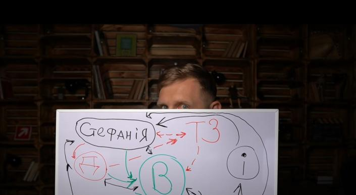
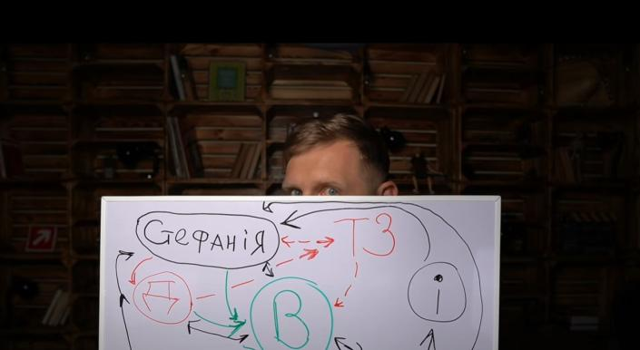

Моє навчання з верстки сайтів
Навчання – нелегка справа. Однак дуже необхідна. Ще як тільки ми робимо перші кроки,
батьки займаються нашою
освітою: вчать нас говорити, писати, рахувати, вивчають з нами віршики, пісеньки та всіляко розвивають нас. В
садочку нас навчають вже багатьом напрямкам роботи, а в школі все стає на новий рівень. І я вважаю, що нам,
дорослим школярам, є чому повчитися в маленьких діточок. Що було б, якби дитя, вперше ступивши крок і тут же
впавши, більше ніколи не спробувало підвестися знову?
Але ж ні, діти встають і роблять спробу за спробою,
падаючи і підіймаючись знову і знову. Коли ми дорослішаємо, разом з дитячою безпосередністю ми втрачаємо і
певну стійкість, витривалість. Скільки учнів покинули вчити якийсь предмет після першої невдалої спроби? «Не
вийшло – значить не моє!» - кажуть вони впевнено. Але навчання в тому і полягає, що треба робити багато спроб,
перш ніж якась із них буде вдалою.
А тоді смак перемоги дарує наснаги на наступні спроби, вселяє віру та
надихає. Але варто розуміти, що не буває навчання без поразок та без помилок. Якби люди робили помилки і
відразу кидали свою справу – ми б, напевне, й досі жили у печерах
 

Як отримати знання
Зможемо освоїти
- HTML
- CSS
- JS
- Знайомство з React
- Знайомство з WP